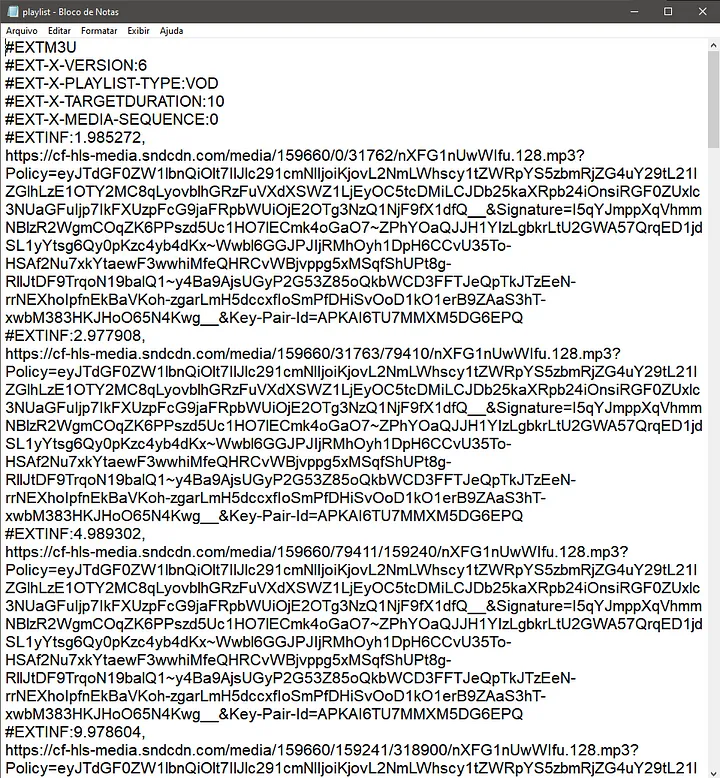

No ultimo artigo, nós investigamos o website que usaríamos no nosso web scraping. Com isso descobrimos diversos links que são utilizados para streamar o conteúdo ao usuário. Nesse artigo iremos aprofundar e entender sobre o protocolo de streaming utilizado no website.
O que é HLS?
HLS é um protocolo de live streaming criado pela Apple, e amplamente utilizado para streaming ao vivo e sob demanda. O protocolo HLS divide o conteúdo em partes menores, e transfere eles através de uma conexão HTTP, que então é baixado e reproduzido pelo usuário final.
Os arquivos que carregam as partes do HLS possuem extensão .m3u8, os arquivos m3u8 podem ser lidos como um arquivo de texto comum, dentro dele possuem vários links que representam uma parte do conteúdo, no caso do SoundCloud cada links é uma parte da música total.
No ultimo artigo terminamos acessando o link HLS, que nos retornou um objeto JSON com outro link, ao abrirmos o link em um navegador, é automaticamente baixado um arquivo .m3u8 com o nome de playlist, ao abrirmos o arquivo como texto, conseguimos diversos links para as partes do áudio, e também informações relacionadas ao tempo de duração de cada parte.

E chegamos ao fim do nosso artigo, no próximo artigo codaremos a primeira parte do nosso scraper. Abaixo deixarei alguns links relevantes ao tópico.